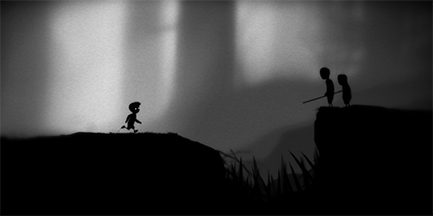

A Study of Limbo by Playdead: the Roles of Sounds and Images in the Game
In this site I want to explore the use of audio in Bethesda's Skyrim; into audio example:
descripe audio example
in The Skin Ego(note 1).
..
(m)other.
l........
intro second example
visual example:
game and audio explanation (note 2).
.......:
 (note 3)
.......
(note 1): author title rest of cite
(note 2): source
(note 3): source